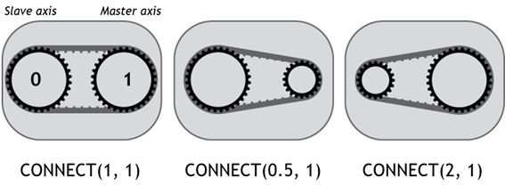
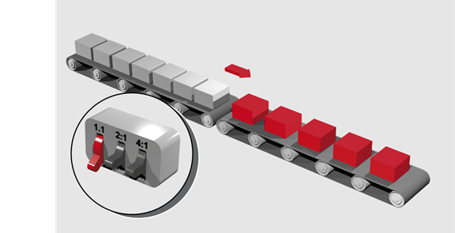
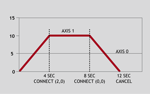

Axis Command
CONNECT(ratio, driving_axis[, mode])
CO(...)
Links the demand position of the base axis to the measured movements of the driving axes to produce an electronic gearbox.
The ratio can be changed at any time by issuing another CONNECT command which will automatically update the ratio at CLUTCH_RATE without the previous CONNECT being cancelled. The command can be cancelled with a CANCEL or RAPIDSTOP command
You can prevent CONNECT from being cancelled when a hardware or software limit is reached by setting the bit in AXIS_MODE . When this bit is set the ratio is temporarily set to zero while the limit is active so the axis will slow to a stop at the programmed CLUTCH_RATE .
|
ratio: |
This parameter holds the number of edges the base axis is required to move per increment of the driving axis. The ratio value can be either positive or negative. The ratio is always specified as an encoder edge ratio. |
|
|
driving_axis: |
This parameter specifies the axis to link to. |
|
|
mode: |
0 |
The axis follows the measured position (MPOS) of the driving axis. (default) |
|
1 |
The axis follows the demand position (DPOS) of the driving axis. |
|
As CONNECT uses encoder data it is not affected by UNITS , if you need to change the scale of your encoder feedback you should use ENCODER_RATIO

To achieve an exact connection of fractional ratios of values such as 1024/3072. The MOVELINK command can be used with the continuous repeat link option set to ON .
In a press feed a roller is required to rotate at a speed one quarter of the measured rate from an encoder mounted on the incoming conveyor. The roller is wired to the master axis 0. The reference encoder is connected to axis 1.
BASE(0)
SERVO = ON
CONNECT(0.25, 1)
A machine has an automatic feed on axis 1 which must move at a set ratio to axis 0. This ratio is selected using inputs 0-2 to select a particular “gear”, this ratio can be updated every 100 ms. Combinations of inputs will select intermediate gear ratios. For example 1 ON and 2 ON gives a ratio of 6:1.

BASE(1)
FORWARD AXIS(0)
WHILE IN(3) = ON
WA(100)
gear = IN(0, 2)
CONNECT(gear, 0)
WEND
RAPIDSTOP 'Cancel the FORWARD and the CONNECT
Axis 0 is required to run a continuous forward, axis 1 must connect to this but without the step change in speed that would be caused by simply calling the CONNECT. CLUTCH_RATE is used along with an initial and final connect ratio of zero to get the required motion.

FORWARD AXIS(0)
BASE(1)
CONNECT(0, 0) 'Set initial ratio to zero
CLUTCH_RATE = 0.5 'Set clutch rate
CONNECT(2, 0) 'Apply the required connect ratio
WA(8000)
CONNECT(0, 0) 'Apply zero ratio to disconnect
WA(4000) 'Wait for deceleration to complete
CANCEL 'Cancel connect
Axis 3 must run synchronised to axis 2 without any lag or delay coming from the servo loop in axis 2. MPOS of axis 2 is the “true” encoder position and is usually the master position for CONNECT. However, it has a following error compared to DPOS on the axis so the connected axis will lag behind the demand position of the driving axis.
To minimise the lag, the mode is set to make the CONNECT follow the DPOS.
CONNECT(1, 2, 1) AXIS(3) ' follow the demand position (DPOS)
BASE(2)
SPEED = 120
ACCEL = 1000
DECEL = 1000
MOVE(460) ' both axes 2 and 3 move together
WAIT IDLE